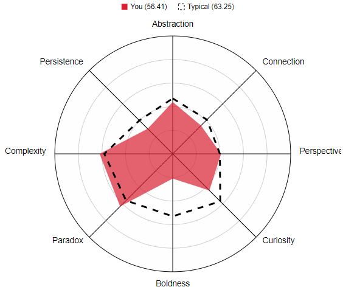

|
| Created |
1st December |
| Modified |
4th December |
| Creator |
Mark Fletcher |
|

Email Me |
|
 |
| |
 |
|
Personal Profile |
| Results of online Myers-Briggs Test -> DEFENDER PERSONALITY Link to Defender Personality |
| The Defender personality type is quite unique, as many of their qualities defy the definition of their individual traits. Though sensitive, Defenders have excellent analytical abilities; though reserved, they have well-developed people skills and robust social relationships; and though they are generally a conservative type, Defenders are often receptive to change and new ideas. As with so many things, people with the Defender personality type are more than the sum of their parts, and it is the way they use these strengths that defines who they are. |
| Results of online learning styles Test -> VISUAL LEARNER Link to Test Results |
Your Scores:
- Auditory: 30%
- Visual: 45%
- Tactile: 25%
You are a Visual learner! |
If you are a visual learner, you learn by reading or seeing pictures. You understand and remember things by sight. You can picture what you are learning in your head, and you learn best by using methods that are primarily visual. You like to see what you are learning.
As a visual learner, you are usually neat and clean. You often close your eyes to visualize or remember something, and you will find something to watch if you become bored. You may have difficulty with spoken directions and may be easily distracted by sounds. You are attracted to color and to spoken language (like stories) that is rich in imagery.
Here are some things that visual learners like you can do to learn better:
- Sit near the front of the classroom. (It won't mean you're the teacher's pet!)
- Have your eyesight checked on a regular basis.
- Use flashcards to learn new words.
- Try to visualize things that you hear or things that are read to you.
- Write down key words, ideas, or instructions.
- Draw pictures to help explain new concepts and then explain the pictures.
- Color code things.
- Avoid distractions during study times.
Remember that you need to see things, not just hear things, to learn well. |
| Results of creativity Test -> BELOW TYPICAL Link to Test |
Your creativity score is 56.41 - compared to the typical resut of 63.25 it shows I'm perhaps not very creative at all!
Explanation of different metrics
- Abstraction - The ability to abstract concepts from ideas
- Connection - The ability to make connections between things that don't initially have an apparent connection
- Perspective - The ability to shift ones perspective on a situation - in terms of space and time, and other people
- Curiosity - The desire to change or improve things that everyone else accepts as the norm
- Boldness - The confidence to push boundaries beyond accepted conventions. Also the ability to eliminate fear of what others think of you
- Paradox - The ability to simultaneously accept and work with statements that are contradictory
- Complexity - The ability to carry large quantities of information and be able to manipulate and manage the relationships between such information
- Persistence - The ability to force oneself to keep trying to derive more and stronger solutions even when good ones have already been generated
|
 |
|
| Results |
What do the results of these tests mean for you?
The results show that I am adaptable to change and that I can relate well to others which is essential for team cohesion and harmony within a group. I learn best through visual aids, so will respond well to being shown ideas, presentations etc. rather than just being talked to. The low creativity score is typical for someone with an engineering mindset over that of an artistic one so I'm not really surprised!
How do you think these results may influence your behaviour in a team?
As mentioned before, the results show that I will bring little or no conflict to a team since my focus is on ensuring the team is getting along and I prefer to focus on the task at hand rather than politics within a group. The creativity score tells me that I wouldn't offer much in the way of creative input although I have been quite innovative in previous challenges within the workplace with regard to automation and process improvements.
How should you take this into account when forming a team?
I would fit best into a group that already has lots of good ideas regardless of complexity but is having difficulty realising them or in a group of individuals that is unfamiliar with group work. |
|